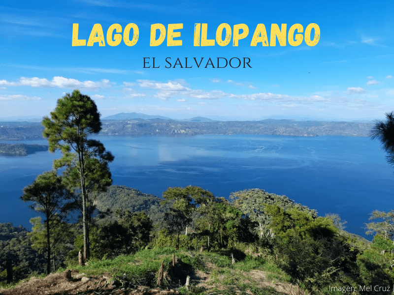

Considerado uno de los lagos naturales más grande del país, el lago de Ilopango es uno de los lugares turísticos cerca de San Salvador más visitados. Con un volcán de tipo caldera en sus profundidades, rodeado de exuberante vegetación y situado a pocos kilómetros del centro de la ciudad de San Salvador, éste es el lugar ideal tanto para pasear, hacer deporte o desconectarse de la rutina. Sea cual sea tu idea de paseo perfecto, aquí te proponemos algunos planes para pasarla bien si tenés pensado visitar este hermoso lugar.
Pocas cosas hay como llegar al lago de Ilopango y disfrutar de todas las actividades que este ofrece. Si tenés ganas de preparar tu recorrido seguínos en esta aventura.